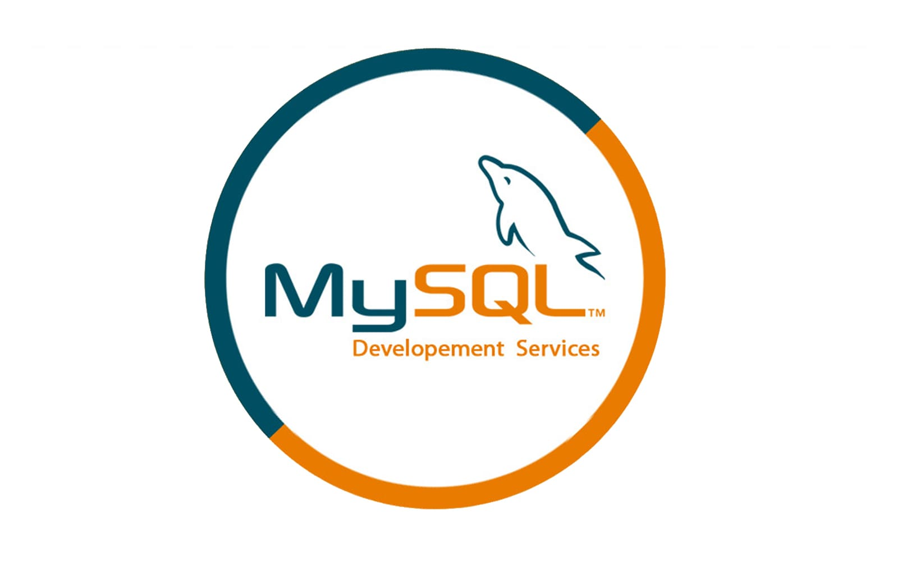
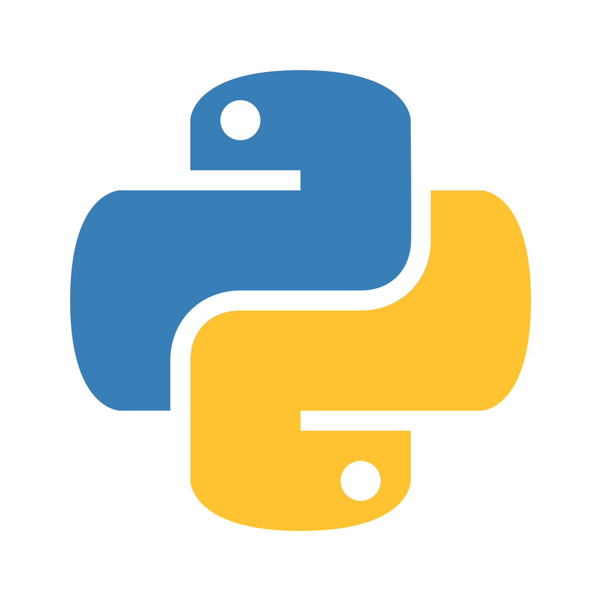
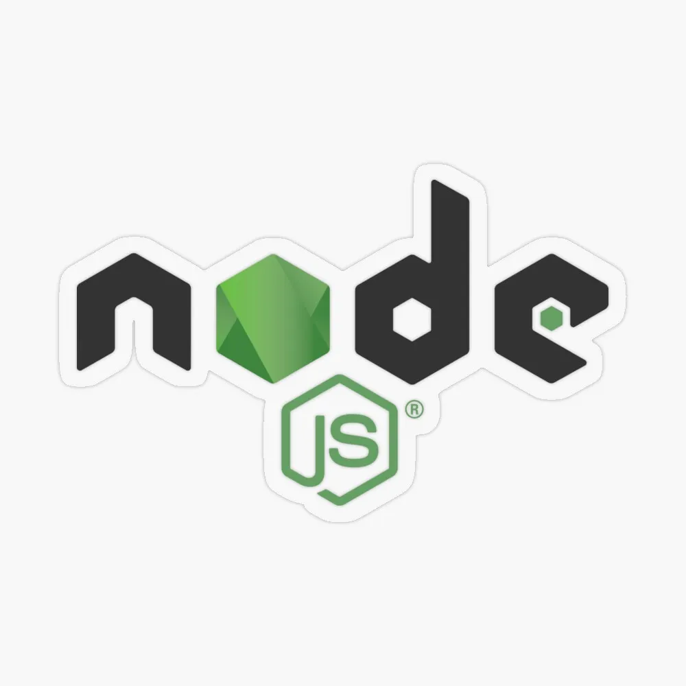
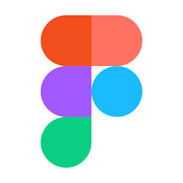
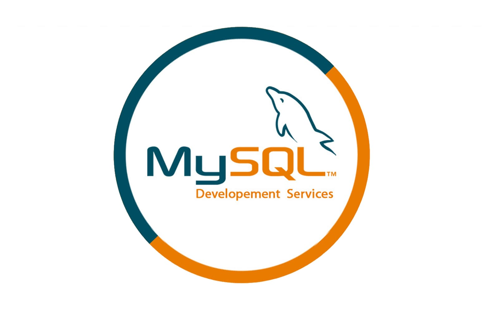
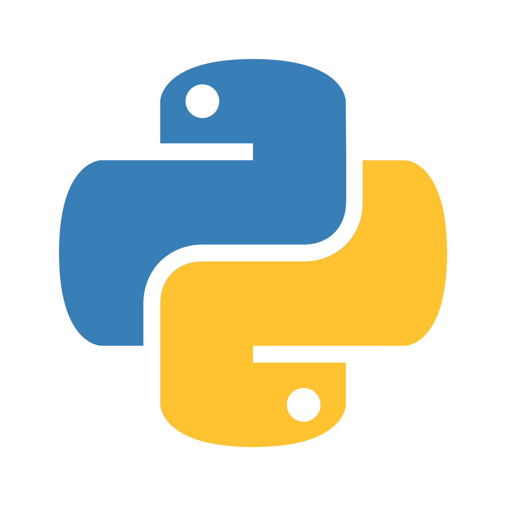
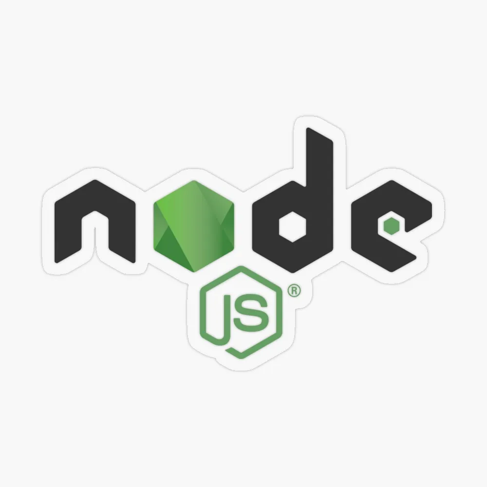
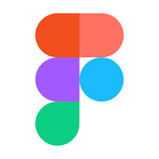

Chehan
(Chika😊)
I am Chehan Sivaruban, a dedicated Software Engineer from Colombo, Sri Lanka, with a passion for mobile development. I specialize in building high-performance applications using Flutter and have experience working across a range of technologies, including Kotlin, Java, React, and Node.js. My expertise lies in designing scalable and maintainable mobile solutions following Clean Architecture and Domain-Driven Design (DDD) principles.
I hold a BEng. in Software Engineering (Hons) from the Informatics Institute of Technology, affiliated with the University of Westminster, London, where I graduated with Second Upper Class Honors. Throughout my career, I have led the development of large-scale applications, collaborated with cross-functional teams, and consistently delivered high-quality products that meet business and user needs.
With a strong focus on writing clean, reusable code, I am always eager to tackle new challenges and refine my skills. I am committed to excellence, whether working independently or as part of a team.
 







Developed a predictive system using emotion detection, topic classification, and sentiment analysis to forecast engagement.
Learn MoreCollaborated to create an app predicting solar photovoltaic productivity based on environmental factors.
Learn MoreDesigned a Premier League club management system using OOP and the MVC architecture.
Learn MoreMay 2023 - Present
Lead mobile development for large-scale applications using Flutter, delivering high-quality apps with performance optimization.
July 2022 - May 2023
Developed and maintained large-scale telecommunication mobile applications using Flutter.
July 2021 - July 2022
Led research and development of emerging technologies to modernize telco self-care applications.
Informatics Institute of Technology (Affiliated with University of Westminster, London)
Graduated with Second Upper Class Honors (2020 - 2022)
Wesley College, Colombo
Advanced Level: Combined Mathematics, Physics & Chemistry
Ordinary Level: 7As, 2Bs
Won 1st place in Stage Craft, demonstrating exceptional creativity and presentation skills.
IIT Hub Rank – 3, Sri Lanka Rank – 23.
IIT Hub Rank – 8.
Finalist in the HaXmas hackathon, organized and managed an innovative project.
Leadership experience as the Assistant Troupe Leader in the Scouting team.
Led the brass band as Assistant Leader, coordinating performances and training members.